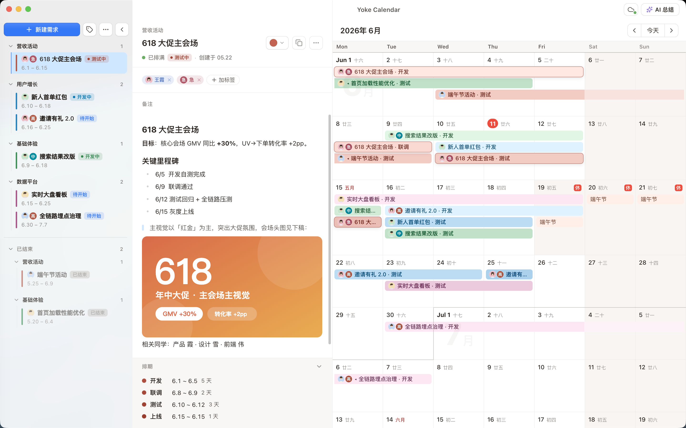
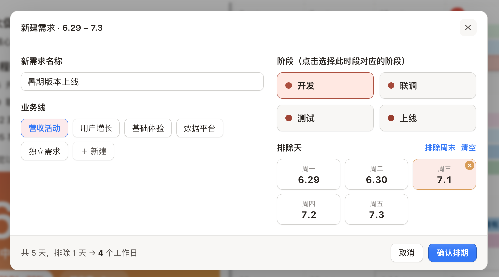
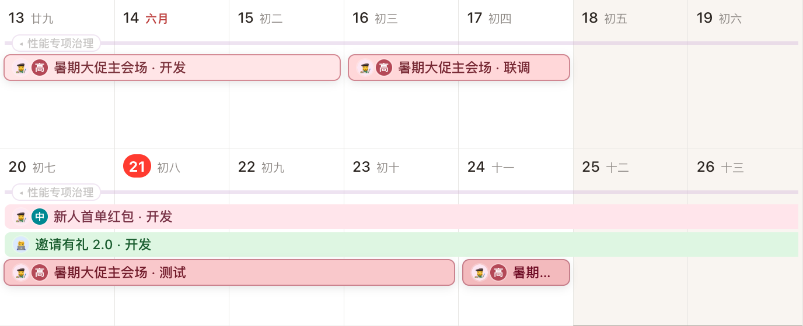
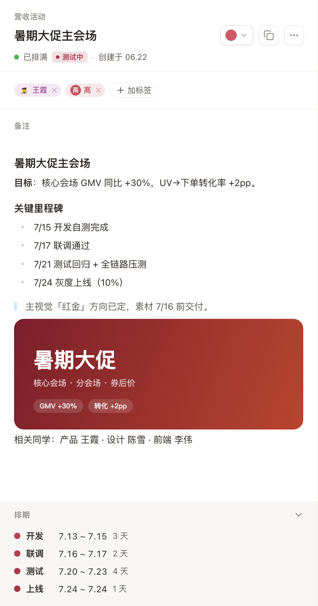
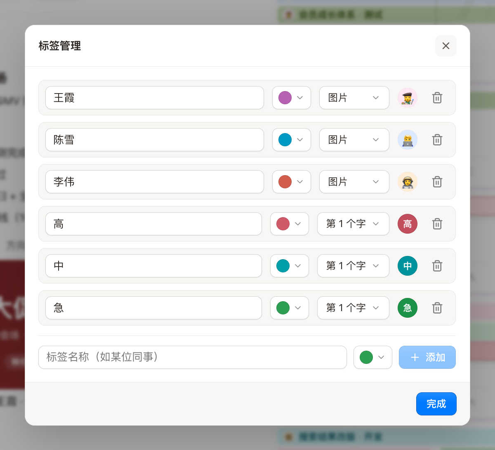
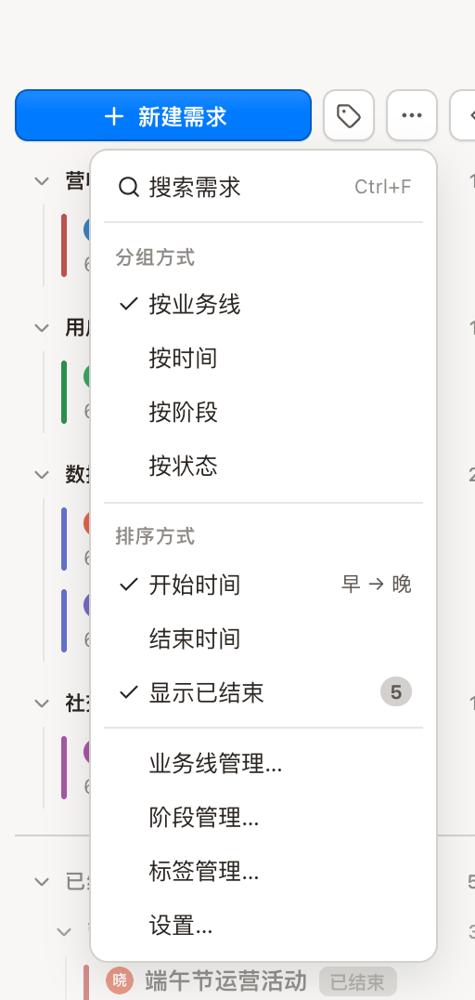
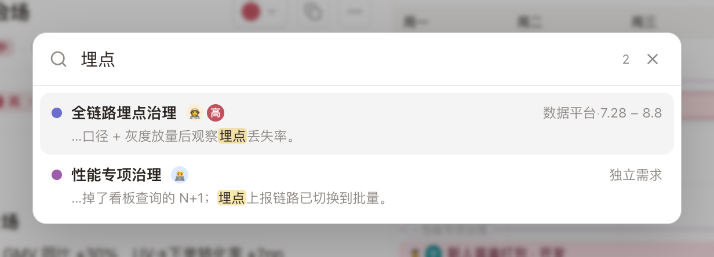
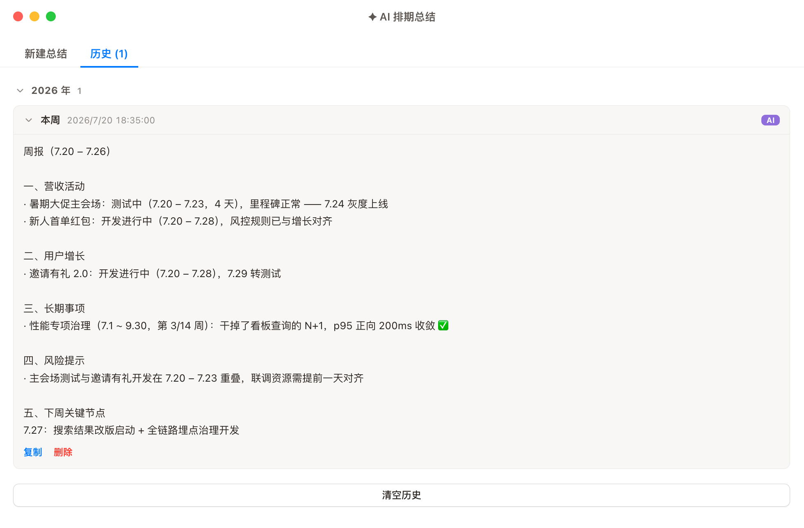
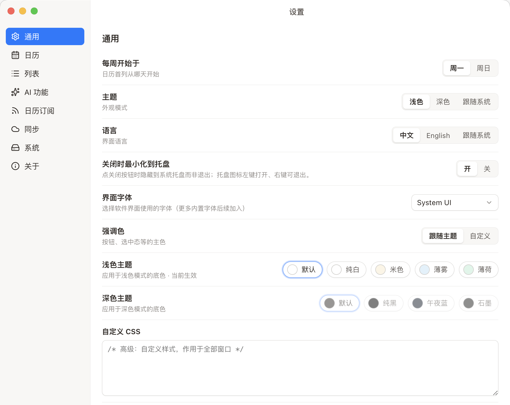

🗓️
划选即排期
在日历上拖拽划选时间段，直接落成需求的各个阶段（开发 / 联调 / 测试 / 上线）。泳道式色条，谁在做什么、下一步是什么，一眼可见。
Beta 公测中
个人和团队的桌面排期工具。

在日历上拖拽划选时间段，直接落成需求的各个阶段（开发 / 联调 / 测试 / 上线）。泳道式色条，谁在做什么、下一步是什么，一眼可见。
接入 OpenAI / Claude / Gemini / DeepSeek / 通义 / Kimi / 智谱 等 14+ 服务商，或复用本机 Claude Code / Codex CLI，一键生成周报、风险盘点、对上汇报。
GitHub 私有仓库，或任意 WebDAV（坚果云 / Nextcloud）。后台按需自动同步，密钥本机加密、永不随数据上传。
订阅任意 .ics 日历作只读叠加；内置中国节假日 + 农历 + 调休，多地区可切换。
数据存在你本机，离线可用。同步、AI 全部可选——隐私你说了算。
签名 + 公证的安装包，后台静默下载，重启即更新。macOS / Windows / Linux 全平台覆盖。
每一处交互都按桌面应用的标准打磨——这里挑八处。
在日历上拖出一段时间，选好业务线和阶段；法定节假日自动标出，点一下即可排除某天，底部把工作日数实时算给你看。

内置多地区法定节假日——含中国调休的「休 / 班」角标——以及农历；周末与假期自动淡化，排期色条上的头像让「谁在做什么」一目了然。

富文本备注支持标题、列表、引用、代码块与图片粘贴；标签可以用同事头像，状态、阶段与排期始终钉在手边。

标签可以是同事——用名字首字的色块，或上传一张头像；它会跟着出现在侧栏、日历色条和搜索结果里，「谁在做什么」一眼认出。

左侧需求列表可按业务线、时间、阶段或状态分组，再配合开始 / 结束时间排序与「显示已结束」，需求再多也能快速归位。

一个搜索框同时搜需求、业务线和标签；结果带上业务线与排期区间，回车即定位到日历与列表中的对应位置。

选个时间范围，AI 按业务线汇总进行中与已结束、标出风险与下周节点；生成历史随时复制，14+ 服务商或本机 CLI 任选。

浅色四款、深色四款主题底色，强调色、界面字体、每周起始日……还有自定义 CSS 兜底，把它调成你的样子。

正在获取最新版本…
所有版本见 GitHub Releases
加载中…